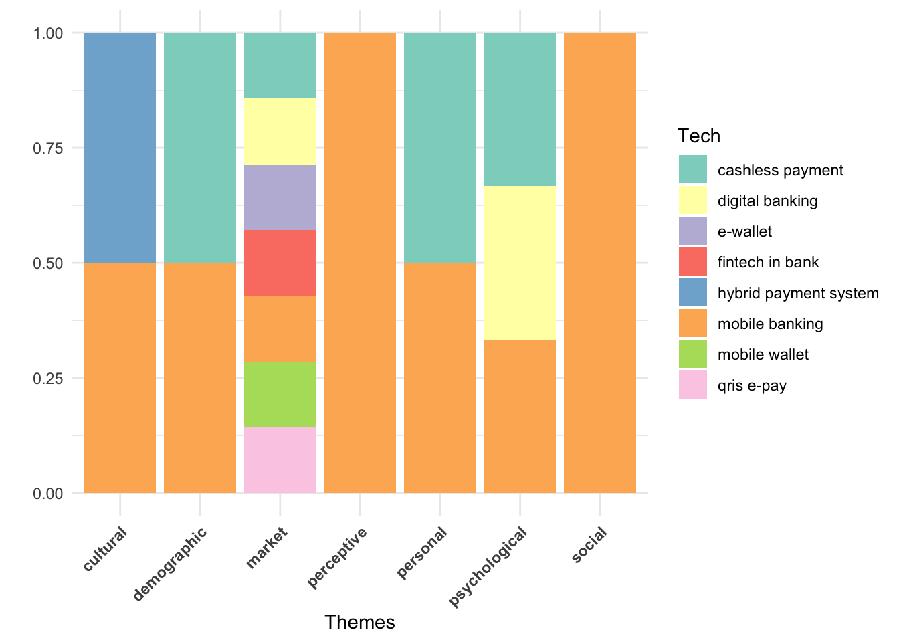
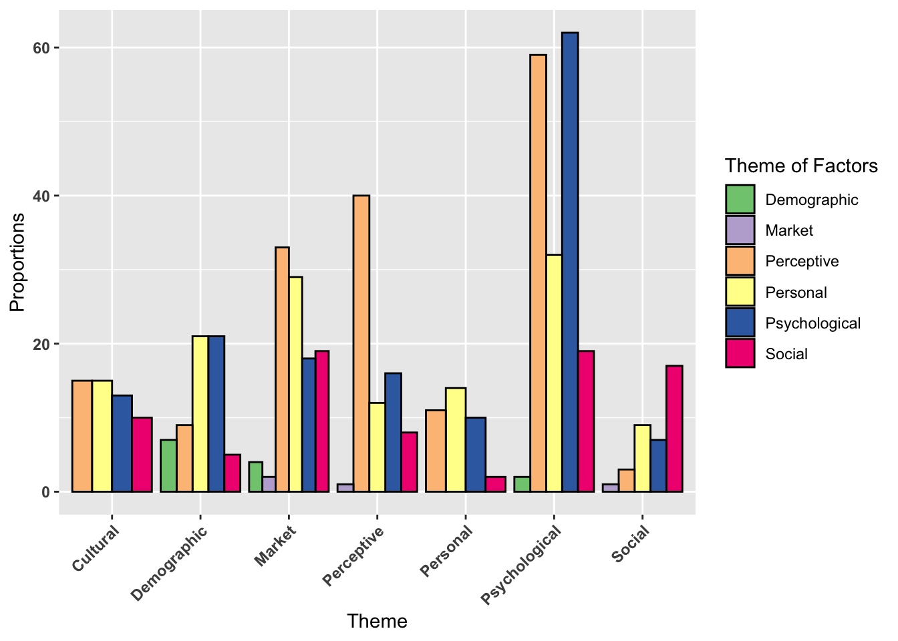
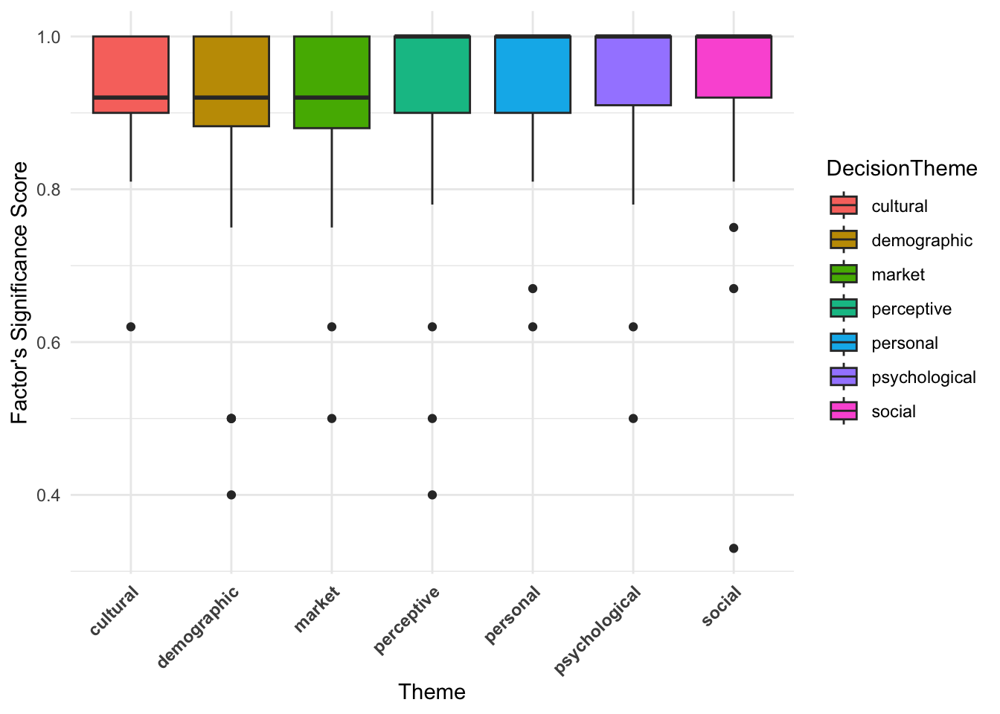
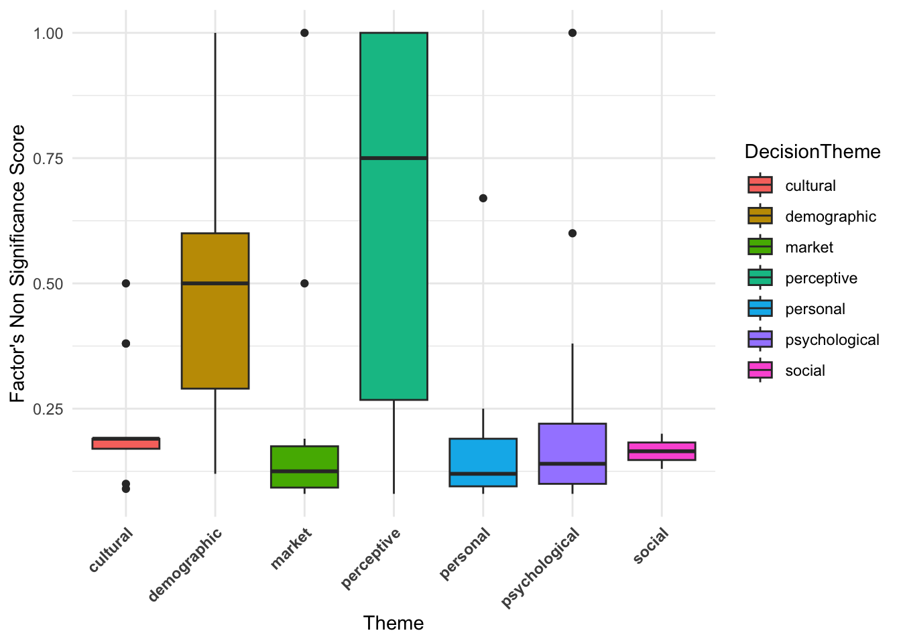
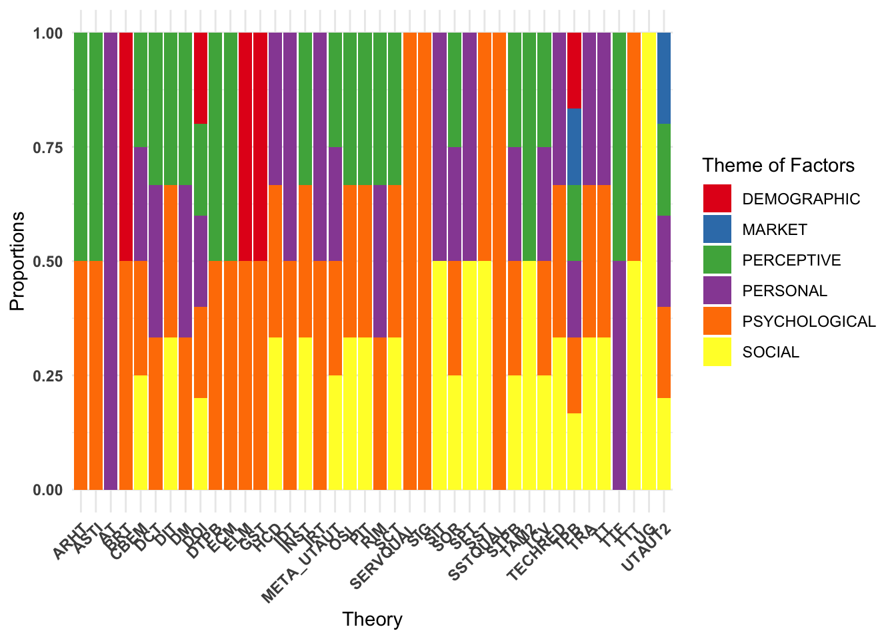

library(readr)
library(dplyr)
library(stringr)
library(purrr)
library(ggplot2)
library(psych)
library(tidyr)
library(stargazer)
library(forcats)
library(xtable)
library(ggraph)
library(igraph)
library(gt)
library(ggpubr)
library(ggcorrplot)
library(ggnewscale)
library(ggeffects)
library(ggeffects)
library(pheatmap)
library(gridExtra)
library(grid)
library(treemapify)Data Analysis
Part 1. Data Cleaning and Prep
The R libraries used for data analysis are as follows:
Looking at the data:
df <- read.csv("data/P2_AR_07.csv")
glimpse(df)Rows: 143
Columns: 62
$ Reason_Theme <chr> "comparative", "behavioral intention", "keywords", …
$ CiteKey <chr> "LonkaniAcomparativeStudyOfTrust2020", "SaprikisACo…
$ ID <chr> "p2_01", "p2_02", "p2_03", "p2_04", "p2_05", "p2_06…
$ Algo_Theme <chr> "psychological, cultural, demographic", "psychologi…
$ DecisionTheme <chr> "cultural", "psychological", "psychological", "cult…
$ Man_Theme <chr> "cultural, psychological", "social, psychological",…
$ Match <int> 1, 1, 1, 0, 1, 1, 1, 1, 1, 1, 1, 1, 1, 1, 1, 1, 1, …
$ Title <chr> "a comparative study of trust in mobile banking: an…
$ Year <int> 2020, 2022, 2021, 2019, 2020, 2020, 2024, 2020, 201…
$ PublicationTitle <chr> "journal of global information management", "inform…
$ Creators <chr> "ravi lonkani, chuleeporn changchit, tim klaus, jom…
$ Publisher <chr> "igi global", "mdpi", "igi global", "elsevier", "wi…
$ AffiliationCountry <chr> "thailand", "greece", "brazil, south korea, usa", "…
$ K1 <chr> "technology acceptance model", "word-of-mouth", "em…
$ K2 <chr> "initial trust", "mobile-banking", "consumer adopti…
$ K3 <chr> "consumer acceptance", "acceptance model", "initial…
$ K4 <chr> "gender-differences", "information-technology", "in…
$ K5 <chr> "normative beliefs", "consumer adoption", "anxiety"…
$ K6 <chr> "national culture", "moderating role", "acceptance"…
$ K7 <chr> "usage intentions", "utaut model", "commerce", "emp…
$ K8 <chr> "privacy concerns", "services", "traits", "acceptan…
$ K9 <chr> "internet users", "internet", "usage", "mediating r…
$ K10 <chr> "online trust", "determinants", "satisfaction", "ad…
$ Num_Factors <int> 5, 8, 5, 6, 4, 6, 4, 5, 4, 4, 8, 4, 5, 3, 6, 8, 6, …
$ F1 <chr> "cltr", "peex", "self", "habt", "attd", "pu", "prgt…
$ F2 <chr> "norm_blf", "socinf", "trst", "psec", "intrac", "pe…
$ F3 <chr> "prv_exp", "fac_cond", "peou", "ppriv", "cltr", "so…
$ F4 <chr> "competnc", "risk", "pu", "trst", "innov", "fac_con…
$ F5 <chr> "trst", "anxiety", "intnt_use", "peex", "", "trst",…
$ F6 <chr> "", "rwrd", "", "price", "", "prisk", "", "", "", "…
$ F7 <chr> "", "sec", "", "", "", "", "", "", "", "", "habt", …
$ F8 <chr> "", "recom", "", "", "", "", "", "", "", "", "price…
$ F9 <chr> "", "", "", "", "", "", "", "", "", "", "", "", "",…
$ F1_THEME <chr> "social", "personal", "psychological", "personal", …
$ F2_THEME <chr> "social", "social", "psychological", "perceptive", …
$ F3_THEME <chr> "personal", "external", "perceptive", "perceptive",…
$ F4_THEME <chr> "external", "external", "perceptive", "psychologica…
$ F5_THEME <chr> "psychological", "psychological", "psychological", …
$ F6_THEME <chr> "", "external", "", "external", "", "perceptive", "…
$ F7_THEME <chr> "", "external", "", "", "", "", "", "", "", "", "pe…
$ F8_THEME <chr> "", "external", "", "", "", "", "", "", "", "", "ex…
$ F9_THEME <chr> "", "", "", "", "", "", "", "", "", "", "", "", "",…
$ NUM_FAC_NOTSIG <int> 2, 2, 0, 4, 0, 0, 0, 0, 0, 1, 0, 0, 0, 0, 1, 1, 0, …
$ FNS1 <chr> "age", "efex", "", "peex", "", "", "", "", "", "soc…
$ FNS2 <chr> "sex", "fac_cond", "", "pval", "", "", "", "", "", …
$ FNS3 <chr> "", "", "", "socinf", "", "", "", "", "", "", "", "…
$ FNS4 <chr> "", "", "", "hed_motiv", "", "", "", "", "", "", ""…
$ ResearchType <chr> "comparative", "empirical", "empirical", "empirical…
$ SampleSize <int> 560, 837, 458, 901, 1340, 755, 418, 203, 384, 127, …
$ METHOD1 <chr> "regression", "cfa", "cfa", "sem", "multigroup sem"…
$ METHOD2 <chr> "", "sem", "sem", "", "", "", "", "", "", "", "", "…
$ METHOD3 <chr> "", "", "", "", "", "", "", "", "", "", "", "", "",…
$ METHOD4 <chr> "", "", "", "", "", "", "", "", "", "", "", "", "",…
$ Tech <chr> "mobile banking", "mobile banking", "mobile banking…
$ THEORY1 <chr> "hcd", "utaut", "tam", "utaut2", "tam", "tam", "dct…
$ THEORY2 <chr> "", "", "", "", "tpb", "", "", "", "tpb", "", "utau…
$ THEORY3 <chr> "", "", "", "", "", "", "", "", "", "", "", "", "",…
$ THEORY4 <chr> "", "", "", "", "", "", "", "", "", "", "", "", "",…
$ LIMIT1 <chr> "sample", "sample", "sample", "sample", "no_long", …
$ LIMIT2 <chr> "", "cross_cult", "bias", "no_mod", "bias", "sample…
$ LIMIT3 <chr> "", "incomp_fac", "question", "incomp_fac", "no_mod…
$ Abstract <chr> "with the rapid growth of mobile phone usage, mobil…Summary statiscs
psych::describe(df %>%
dplyr::select(Year, Match, Num_Factors, NUM_FAC_NOTSIG, SampleSize)) %>%
dplyr::select(vars, n, mean, sd, median, min, max) vars n mean sd median min max
Year 1 143 2021.18 1.84 2021 2018 2024
Match 2 143 0.94 0.23 1 0 1
Num_Factors 3 143 5.31 1.60 5 2 9
NUM_FAC_NOTSIG 4 143 0.46 0.87 0 0 4
SampleSize 5 103 894.50 3189.24 384 26 25000Woah! One paper has 25,000 and that is messing up the sample sizes. Remembering this study’s ID:
df %>% filter(SampleSize == 25000) %>%
dplyr::select(ID, Title, SampleSize) ID
1 p2_77
Title
1 financial literacy, behavioral traits, and epayment adoption and usage in japan
SampleSize
1 25000Setting aside the study with sample size of 25,000:
psych::describe(
df %>% dplyr::select(Year, Match, Num_Factors, NUM_FAC_NOTSIG, SampleSize) %>%
filter(SampleSize != 25000)) %>%
dplyr::select(vars, n, mean, sd, median, min, max) vars n mean sd median min max
Year 1 102 2021.14 1.86 2021 2018 2024
Match 2 102 0.94 0.24 1 0 1
Num_Factors 3 102 5.15 1.65 5 2 9
NUM_FAC_NOTSIG 4 102 0.54 0.95 0 0 4
SampleSize 5 102 658.18 2112.42 384 26 21526Welp! Another large study.
df %>% filter(SampleSize == 21526) %>%
dplyr::select(ID, Title, SampleSize) ID
1 p2_59
Title
1 exploring mobile banking adoption and service quality features through user-generated content: the application of a topic modeling approach to google play store reviews
SampleSize
1 21526Setting aside the study with sample size of 25,000 and the one with 21,52 as they are outliers:
psych::describe(
df %>% filter(!ID %in% c('p2_59','p2_77')) %>%
dplyr::select(ID, Year,Match, Num_Factors, NUM_FAC_NOTSIG, SampleSize)) %>%
dplyr::select(vars, n, mean, sd, median, min, max) vars n mean sd median min max
ID* 1 141 71.00 40.85 71 1 141
Year 2 141 2021.16 1.85 2021 2018 2024
Match 3 141 0.94 0.23 1 0 1
Num_Factors 4 141 5.33 1.60 5 2 9
NUM_FAC_NOTSIG 5 141 0.47 0.87 0 0 4
SampleSize 6 101 451.56 330.40 384 26 2202Counting the unique values for each of the columns:
results <- c(
paste('Number of Unique Values in ID: ', n_distinct(df$ID)),
paste('Number of Unique Values in Title: ', n_distinct(df$Title)),
paste('Number of Unique Values in PublicationTitles: ', n_distinct(df$PublicationTitle)),
paste('Number of Unique Values in Publisher: ', n_distinct(df$Publisher)),
paste('Number of Unique Values in AffiliationCountry: ', n_distinct(df$AffiliationCountry)),
paste('Number of Unique Values in Factors: ', dplyr::n_distinct(df %>% dplyr::select(F1:F9) %>% unlist())),
paste('Number of Unique Values in Not Sig: ', dplyr::n_distinct(df %>% dplyr::select(FNS1:FNS4) %>% unlist())),
paste('Number of Unique Values in Methods: ', dplyr::n_distinct(df %>% dplyr::select(METHOD1:METHOD4) %>% unlist())),
paste('Number of Unique Values in Theory: ', dplyr::n_distinct(df %>% dplyr::select(THEORY1:THEORY4) %>% unlist())),
paste('Number of Unique Values in Limits: ', dplyr::n_distinct(df %>% dplyr::select(LIMIT1:LIMIT3) %>% unlist())),
paste('Number of Unique Values in ResearchType: ', n_distinct(df$ResearchType)),
paste('Number of Unique Values in Authors: ', n_distinct(df$Creators)),
paste('Number of Unique Values in Keywords: ', dplyr::n_distinct(df %>% dplyr::select(K1:K10) %>% unlist())),
paste('Number of Unique Values in Tech: ', n_distinct(df$Tech)),
paste('Number of Unique Values in Themes: ', n_distinct(df$DecisionTheme))
)
cat(results, sep = "\n")Number of Unique Values in ID: 143
Number of Unique Values in Title: 143
Number of Unique Values in PublicationTitles: 54
Number of Unique Values in Publisher: 15
Number of Unique Values in AffiliationCountry: 43
Number of Unique Values in Factors: 233
Number of Unique Values in Not Sig: 32
Number of Unique Values in Methods: 42
Number of Unique Values in Theory: 44
Number of Unique Values in Limits: 16
Number of Unique Values in ResearchType: 16
Number of Unique Values in Authors: 137
Number of Unique Values in Keywords: 413
Number of Unique Values in Tech: 9
Number of Unique Values in Themes: 7Checking the sample sizes Without the outliers:
psych::describe(
df %>% filter(!ID %in% c('p2_59','p2_77')) %>%
dplyr::select(SampleSize)) %>%
dplyr::select(n, mean, sd, median, min, max) n mean sd median min max
SampleSize 101 451.56 330.4 384 26 2202noOutliers <- df %>% filter(!ID %in% c('p2_59','p2_77'))
quantiles <- quantile(noOutliers$SampleSize, na.rm = T)
quantile_binned <- cut(df$SampleSize,
breaks = quantiles,
labels = c("SQ1", "SQ2", "SQ3", "SQ4"),
include.lowest = TRUE)
df$SampleSizeBin <- quantile_binned
df <- df %>% mutate(
SampleSizeBin = if_else(
is.na(SampleSizeBin),
"NotStated",
SampleSizeBin
)
)
df %>% count(SampleSizeBin) SampleSizeBin n
1 NotStated 42
2 SQ1 26
3 SQ2 28
4 SQ3 23
5 SQ4 24Let’s calculate the scores for factors that are significant and non-significant:
F_counts <- df %>%
dplyr::select(F1:F9) %>%
unlist() %>%
table() %>%
as.data.frame() %>%
rename(FAC = ".", F_count = "Freq")
FNS_counts <- df %>%
dplyr::select(FNS1:FNS4) %>%
unlist() %>%
table() %>%
as.data.frame() %>%
rename(FAC = ".", FNS_counts = "Freq")
# Count occurrences of each factor in all columns (F1 to F9 + FNS1 to FNS4)
Total_counts <- df %>%
dplyr::select(c(F1:F9, FNS1:FNS4)) %>%
unlist() %>%
table() %>%
as.data.frame() %>%
rename(FAC = ".", Total_count = "Freq")
# Merge the two count tables
factor_scores <- merge(F_counts,FNS_counts, by = "FAC", all = TRUE)
factor_scores <- merge(factor_scores, Total_counts, by = "FAC", all = TRUE)
# Replace NAs with 0 for cases where factors appear in some but not all sections
factor_scores[is.na(factor_scores)] <- 0
factor_scores <- factor_scores %>%
mutate(Score_Sig = round(F_count / Total_count, 2),
Score_NOT_Sig = round(FNS_counts / Total_count, 2)) %>% filter(FAC != "")
head(factor_scores) FAC F_count FNS_counts Total_count Score_Sig Score_NOT_Sig
1 acc 1 0 1 1.0 0.0
2 acc_conv 2 0 2 1.0 0.0
3 accbility 3 0 3 1.0 0.0
4 age 3 3 6 0.5 0.5
5 agrbns 1 0 1 1.0 0.0
6 alts 1 0 1 1.0 0.0Part 2. Analysis
Now let’s actually do some analysis. Let’s visualize how the themes of the papers have changed across the years. I will first generate a bar plot that fills the bars at each year (as a categorical factor) with proportions of themes in that year. This is an aggregation that happens under the hood, and using position = "fill" will actually make sure all the bars consider things relative to eachother, filling the full 100% of the bar.
ggplot(df, aes(x = as.factor(Year), fill = DecisionTheme)) +
geom_bar(position = "fill") +
theme_minimal() +
labs(fill = "Theme",
x = "Year",
y = "Total Count") +
fill_palette("Set3")
To see how things move/flow over the years, a line chart is a great idea:
df %>%
dplyr::count(DecisionTheme, Year) %>%
ggplot(aes(x = as.factor(Year), y = n, color = DecisionTheme, group = DecisionTheme)) +
geom_line() +
geom_point() +
theme_minimal() +
labs(fill = "Theme",
x = "Year",
y = "Total Count") +
fill_palette("Dark2")
For analysis, I will need to convert the data to long format. Since I want to avoid making it too big, I’ll do this separately for each key variable.
theory_long <- df %>%
pivot_longer(
cols = THEORY1:THEORY4,
names_to = "THEORY_NAME",
values_to = "THEORY"
)
method_long <- df %>%
pivot_longer(
cols = METHOD1:METHOD4,
names_to = "METHODNAME",
values_to = "METHOD"
)
limit_long <- df %>%
pivot_longer(
cols = LIMIT1:LIMIT3,
names_to = "LIMITNAME",
values_to = "LIMIT"
)
fac_long <- df %>%
pivot_longer(
cols = F1:F9,
names_to = "FACNAME",
values_to = "FAC"
)
fac_NS_long <- df %>%
pivot_longer(
cols = FNS1:FNS4,
names_to = "FAC_NS_NAME",
values_to = "FAC_NS"
)
factors_based_on_themes <- df %>% pivot_longer(
cols = F1_THEME:F9_THEME,
names_to = "FAC_THEMES_NAMES",
values_to = "FACTHEME"
)Remove all the empty rows:
theory_long <- theory_long %>% filter(THEORY != "") #
method_long <- method_long %>% filter(METHOD != "") #
limit_long <- limit_long %>% filter(LIMIT != "") #
fac_long <- fac_long %>% filter(FAC != "")
fac_NS_long <- fac_NS_long %>% filter(FAC_NS != "")Add factor scores to the long factors and non-signficant factors’ data:
fac_long <- merge(fac_long, factor_scores, by = "FAC", all = T)factor_scores <- factor_scores %>% mutate(FAC_NS = FAC) %>% dplyr::select(FAC_NS,Score_Sig, Score_NOT_Sig)
fac_NS_long <- merge(fac_NS_long, factor_scores, by = "FAC_NS", all = T)Part 3 Statistical Analysis
Now, I want to explore the interactions between the following properties: themes, theories, methodologies, limitations, factors, years, research types, sample sizes, technologies, and non-significant factors. Some questions that can be answered from such an analysis are:
Are there notable differences in the distribution of themes, theories, methodologies, limitations, factors, research types, sample sizes, technologies, and non-significant factors.across years?
Are themes, theories, methodologies, limitations, factors, years, research types, sample sizes, and non-significant factors significantly associated with specific technologies?
Are there significant differences in sample sizes across themes, theories, methodologies, limitations, factors, years, research types, technologies, and non-significant factors?
Do research types vary significantly among different themes, theories, methodologies, limitations, factors, years, sample sizes, technologies, and non-significant factors?
Are there significant differences in methods used across themes, theories, limitations, factors, years, research types, sample sizes, technologies, and non-significant factors?
Are the significant factors identified notably different among themes, theories, methodologies, limitations, years, research types, sample sizes, technologies, and non-significant factors?
Are the non-significant factors identified notably different among themes, theories, methodologies, limitations, factors, years, research types, sample sizes, and technologies?
To do this, I will first decide if further investigation is even worthwhile. First, I will use ANOVA to figure out if there are significant differences between groups of the same variable. That is, are themes, theories, methodologies, limitations, technologies, factors, years, research types, sample sizes, and non-significant factors actually different across the dataset?
build_anova <- function(nameOfCol){
counts_df <- df %>% count({{nameOfCol}}) %>% arrange(desc(n))
counts_df_long <- data.frame(
Group = rep(as.character(counts_df[[1]]), times = counts_df$n),
Value = unlist(lapply(counts_df$n, function(x) seq_len(x)))
)
anova_result <- aov(Value ~ Group, data = counts_df_long)
return(summary(anova_result))
}Paper Themes
Themes are significantly different.
build_anova(DecisionTheme)So, let’s see how they differ across other factors - starting with the ones that do not require pivoting the dataframe! (Year, Tech, SampleSizeBin, ResearchType). This time, I will use a \chi^2 test of independence.
combine_data <- function(nameOfCol){
data_combine <- df %>%
group_by(DecisionTheme) %>%
count({{nameOfCol}})
return(data_combine)
}chisq.test(
xtabs(n ~ DecisionTheme + Year,
data = combine_data(Year))
)
Pearson's Chi-squared test
data: xtabs(n ~ DecisionTheme + Year, data = combine_data(Year))
X-squared = 44.414, df = 36, p-value = 0.1585I do this for SampleSizeBin, ResearchType, and Tech too. The results are:
| Variable | \chi^2 | df | p-value |
|---|---|---|---|
| Year | 44.414 | 36 | 0.159 |
| Tech | 102.59 | 48 | 0.002^{**} |
| SampleSizeBin | 8.6582 | 18 | 0.967 |
| ResearchType | 127.06 | 90 | 0.006^{**} |
For the variables that have multiple columns, I first pivot the dataframe and then do the test. For example, this is how I do it for non-significant factors:
combine_data_longFormat <- function(startCol, stopCol){
longlong <- df %>% pivot_longer(
cols = {{startCol}}:{{stopCol}},
names_to = "NAMES",
values_to = "THINGS") %>%
filter(THINGS != "" & THINGS != " ") # no null values
combined_df <- longlong %>%
group_by(DecisionTheme) %>%
count(THINGS)
return(combined_df)
}
combined_df <- combine_data_longFormat(FNS1, FNS4)
chisq.test(xtabs(n ~ DecisionTheme + THINGS,
data = combined_df))
Pearson's Chi-squared test
data: xtabs(n ~ DecisionTheme + THINGS, data = combined_df)
X-squared = 207.87, df = 180, p-value = 0.0758Doing this for Theory, Methods, Limitatiosn, Factors, as well as factor Themes I have:
| Variable | \chi^2 | df | p-value |
|---|---|---|---|
| Theories | 251.84 | 252 | 0.491 |
| Methods | 272.02 | 240 | 0.076 |
| Limits | 89.327 | 84 | 0.325 |
| Factors | 1461.4 | 1386 | 0.078 |
| FactorThemes | 139.26 | 36 | < 0.001^{***} |
| NS.Factors | 207.87 | 180 | 0.076 |
Which basically means only technology, research type and factor themes are kind of related to overall paper themes. Let’s dig deeper.
Paper Themes vs Technology
I first make sure the rows where Tech is empty are filled with mobile banking (as the most frequent technology, because the papers were specifically m-banking related).
df %>% group_by(DecisionTheme) %>%
mutate(Tech = ifelse(
Tech == "",
"mobile banking",
Tech
)) %>% count(Tech) %>% ggplot(aes(x = as.factor(DecisionTheme), fill = Tech)) +
geom_bar(position = "fill") +
theme_minimal() +
labs(fill = "Tech",
x = "Themes",
y = " ") +
fill_palette("Set3") +
theme(
axis.text.x = element_text(angle = 45, hjust = 1, face = "bold"),
) 
Market studies cover the broadest range of technologies. This is because studies on variations of m-banking like m-wallets and smart wearables fall under the Market category, influencing the theme distribution across technologies. To confirm that this effect is driven by Market studies, I exclude them and rerun the above test:
temp_combine_data <- df %>%
filter(DecisionTheme != 'market') %>%
group_by(DecisionTheme) %>%
count(Tech)
chisq.test(xtabs(
n ~ DecisionTheme + Tech,
data = temp_combine_data
))
Pearson's Chi-squared test
data: xtabs(n ~ DecisionTheme + Tech, data = temp_combine_data)
X-squared = 19.629, df = 20, p-value = 0.4813The p-value of 0.481 means we cannot reject the null hypothesis of \chi^2 test of independence. That means, Paper Themes and Technology studied are independent when we set aside Market studies. How about research type? First, a little house keeping for the data with respect to research type: I simply rename a few columns for easier visualization.
Paper Themes vs Research Type
df %>% group_by(DecisionTheme) %>%
mutate(
ResearchType = case_when(
ResearchType == "survey quantitative" ~ "survey analysis",
ResearchType == "survey, empirical" ~ "survey analysis",
ResearchType == "survey" ~ "survey analysis",
ResearchType == "conceptual qualitative" ~ "conceptual",
ResearchType == "mixed method qualquant" ~ "mixed method",
.default = ResearchType
)) %>%
filter(!is.na(ResearchType) & ResearchType != "") %>%
count(ResearchType) %>%
ggplot(aes(x = as.factor(DecisionTheme), fill = ResearchType)) +
geom_bar(position = "fill") +
theme_minimal() +
labs(fill = "Research Type",
x = "Themes",
y = " ") +
fill_palette("Set3") +
theme(
axis.text.x = element_text(angle = 45, hjust = 1, face = "bold"),
)
Patterns between research types and themes are less distinct. Market and Personal studies show the least research type diversity, while Psychological studies exhibit the most. Comparative research appears only in Cultural and Demographic studies. For themes of factors, I will use a different type of visualization (not filling the bars, but wanting to see the difference separately):
Paper Themes vs Sig/Non-Significant Factors
longlong <- df %>% pivot_longer(
cols = F1_THEME:F9_THEME,
names_to = "NAMES",
values_to = "THINGS") %>%
# don't include external variables
filter(THINGS != "" & THINGS != " " & THINGS != "external") %>% # these changes are for visualization
mutate(THINGS = str_to_title(THINGS), DecisionTheme = str_to_title(DecisionTheme))
longlongGroup <- longlong %>% group_by(DecisionTheme) %>% count(THINGS) %>% arrange(desc(n))
ggplot(longlongGroup, aes(x = as.factor(DecisionTheme), y = n, fill = as.factor(THINGS))) +
geom_bar(stat = "identity", position = "dodge", color = "black") +
labs(fill = "Theme of Factors", x = "Theme", y = "Proportions") +
fill_palette("Accent") +
theme(axis.text.y = element_text(angle = 0, hjust = 1, face = "bold"),
axis.text.x = element_text(angle = 45, hjust = 1, face = "bold")) 
Market studies contain the most diverse set of factors influencing m-banking, likely due to device differences. This suggests that variations of the same technology (e.g., m-wallets, m-payment devices) introduce different influencing factors. A comparative study between devices could provide valuable insights. Market-specific factors appear only in Social and Perceptive themes (aside from Market itself). This suggests that Social and Perceptive studies are the only studies that are considering device differences. Therefore, future research should expand the understanding of device differences in m-banking adoption by conducting thematically different studies. Cultural and Personal themes have the least diverse factor sets. Within Cultural studies, personal and perceptive factors dominate, indicating that cultural influences shape individual perceptions (opinions) and values (personal factors). In personal studies, social factors are overshadowed by others, suggesting that individual preferences take precedence over group opinions. Most studies on individual differences do not consider societal influences, signaling an unexplored area for future research. Although no significant relationship exists between factors and themes, it is still useful to look at some patterns.
Ok, I’m not interested in seeing if there are differences in how many times factors appear significant and non-significant across themes. First, let’s merge the long data on factor and non-significant factors with factor_scores datasets. The factor scores were the counts of how many times each factor appeared across the literature as significant/non-significant.
longlong_fac <- df %>% pivot_longer(
cols = F1:F9,
names_to = "NAMES",
values_to = "FAC_NS"
) %>% filter(FAC_NS != "" & FAC_NS != " " & FAC_NS != "external")
longlong_nonsigfac <- df %>% pivot_longer(
cols = FNS1:FNS4,
names_to = "NAMES",
values_to = "FAC_NS"
) %>% filter(FAC_NS != "" & FAC_NS != " " & FAC_NS != "external")
df_merged_fac <- longlong_fac %>% left_join(factor_scores, by = "FAC_NS")
df_merged_nonsigfac <- longlong_nonsigfac %>% left_join(factor_scores, by = "FAC_NS")The significance score across themes:
ggplot(df_merged_fac,
aes(x = DecisionTheme, y = Score_Sig,
fill = DecisionTheme)) +
geom_boxplot() +
labs(x = "Theme",
y = "Factor's Significance Score") +
theme_minimal() +
theme(axis.text.x = element_text(angle = 45, hjust = 1,
face = "bold"))
Most themes have a high median significant score. The median for all themes is close to 1.0, meaning most factors are frequently significant, at least relative to their total occurrences. Variation exists, but it’s minor. Some themes (e.g., market, cultural and demographic) have slightly lower median than others. The IQR is small, indicating that most factor scores are clustered near the top. Some data points fall below 0.5, suggesting a few factors appear non-significant more so than they are significant. These outliers might indicate less relevant factors for certain themes. Since most medians are high and IQR’s are similar, no theme strongly dominates in terms of factor scores. Market studies might have slightly lower scores than others, indicating device and technology specific factors may be needed. I can also find out which factors have a low significance score for each theme:
head(df_merged_fac %>% filter(Score_Sig <= 0.5) %>% dplyr::select(FAC_NS, DecisionTheme))# A tibble: 6 × 2
FAC_NS DecisionTheme
<chr> <chr>
1 age psychological
2 soc_val demographic
3 edu market
4 trial social
5 age demographic
6 edu demographic The outliers (Score_Sig \leq 0.5) and the related theme they appeared as an outlier in are: Age (Psychological), Education (Market), Triability (Social), Hedonic and Social Value (Perceptive), and Age, Education and Social Value (Demographic). The reason for these outliers are:
- these factors either do not appear frequently in those themes, or
- they do appear, but they are not frequently found to be significant.
For example, I expected age and education to appear in many Demographic studies. Therefore, it is surprising that these factors have low scores. This indicates that age and education are either not frequently used in Demographic studies or they are frequently found to be non-significant variables in m-banking adoption.
The non-significance score across themes:
ggplot(df_merged_nonsigfac,
aes(x = DecisionTheme, y = Score_NOT_Sig,
fill = DecisionTheme)) +
geom_boxplot() +
labs(x = "Theme",
y = "Factor's Non Significance Score") +
theme_minimal() +
theme(axis.text.x = element_text(angle = 45, hjust = 1,
face = "bold"))
Perceptive has the widest range of non-significant scores, with a high median (around 0.75). Demographic also has a relatively high median, meaning many factors in demographic-related studies were found to be non-significant. Some themes (e.g., Perceptive and Demographic) show high variability in non-significant factor scores, while some report very low variability. The presence of outliers suggests that certain studies had unusually high numbers of non-significant factors. The outliers are factors with non-significant scores of higher than 0.5 (appearing more than half of their total frequency as non-significant).
head(df_merged_nonsigfac %>% filter(Score_NOT_Sig > 0.5) %>% dplyr::select(FAC_NS, DecisionTheme))# A tibble: 6 × 2
FAC_NS DecisionTheme
<chr> <chr>
1 soc_val demographic
2 cond_val demographic
3 trial demographic
4 soc_val demographic
5 pu_atm perceptive
6 soc_val psychologicalThese are: Social Value, Conditional Value, Triability (Demographic), Perceived Usefulness of ATM devices, Search Convenience and Evaluation Convenience (Perceptive), Social Value and Hedonic Experience (Psychological), Triability (Personal) and Convenience barriers (Market).
An interesting observation is social values being an outlier in demographic studies for both significance and non-significane score.
glimpse(df %>% filter(F1 == "soc_val" | F2 == "soc_val" | F3 == "soc_val" | F4 == "soc_val" | F5 == "soc_val" | F6 == "soc_val" | F7 == "soc_val" | F8 == "soc_val" | F9 == "soc_val"))Rows: 2
Columns: 63
$ Reason_Theme <chr> "In agreement", ""
$ CiteKey <chr> "", ""
$ ID <chr> "p2_37", "p2_143"
$ Algo_Theme <chr> "psychological, market, perceptive", "perceptive, p…
$ DecisionTheme <chr> "demographic", "perceptive"
$ Man_Theme <chr> "personal, demographic", "perceptive"
$ Match <int> 0, 1
$ Title <chr> "consumption values and mobile banking services: un…
$ Year <int> 2021, 2024
$ PublicationTitle <chr> "international journal of bank marketing", "spanish…
$ Creators <chr> "heikki karjaluoto, richard glavee-geo, dineshwar r…
$ Publisher <chr> "emerald", "emerald"
$ AffiliationCountry <chr> "mauritius", "spain, macedonia"
$ K1 <chr> "technology acceptance model", "perceived value"
$ K2 <chr> "perceived value", "mobile"
$ K3 <chr> "discriminant validity", "services"
$ K4 <chr> "behavioral intention", "adoption"
$ K5 <chr> "initial trust", "acceptance"
$ K6 <chr> "social value", "commerce"
$ K7 <chr> "method bias", "drives"
$ K8 <chr> "adoption", NA
$ K9 <chr> "recommendations", NA
$ K10 <chr> "identification", NA
$ Num_Factors <int> 4, 5
$ F1 <chr> "fun_val", "util_val"
$ F2 <chr> "epi_val", "hed_val"
$ F3 <chr> "emo_val", "soc_val"
$ F4 <chr> "soc_val", "epi_val"
$ F5 <chr> "", "pval"
$ F6 <chr> "", ""
$ F7 <chr> "", ""
$ F8 <chr> "", ""
$ F9 <chr> "", ""
$ F1_THEME <chr> "personal", "personal"
$ F2_THEME <chr> "personal", "personal"
$ F3_THEME <chr> "psychological", "social"
$ F4_THEME <chr> "social", "personal"
$ F5_THEME <chr> "", "perceptive"
$ F6_THEME <chr> "", ""
$ F7_THEME <chr> "", ""
$ F8_THEME <chr> "", ""
$ F9_THEME <chr> "", ""
$ NUM_FAC_NOTSIG <int> 1, 1
$ FNS1 <chr> "soc_val", "hed_val"
$ FNS2 <chr> "", ""
$ FNS3 <chr> "", ""
$ FNS4 <chr> "", ""
$ ResearchType <chr> "quantitative", "quantitative"
$ SampleSize <int> 246, 252
$ METHOD1 <chr> "pls sem", "pls sem"
$ METHOD2 <chr> "", ""
$ METHOD3 <chr> "", ""
$ METHOD4 <chr> "", ""
$ Tech <chr> "mobile banking", "mobile banking"
$ THEORY1 <chr> "tcv", "sor"
$ THEORY2 <chr> "", "tcv"
$ THEORY3 <chr> "", ""
$ THEORY4 <chr> "", ""
$ LIMIT1 <chr> "sample_size", "loc_specific"
$ LIMIT2 <chr> "loc_specific", ""
$ LIMIT3 <chr> "", ""
$ Abstract <chr> "purpose this study develops a theoretical model of…
$ SampleSizeBin <chr> "SQ1", "SQ1"This is because of the study of Karjaluoto Karjaluoto et al. (2021) where they found that social values did not influence trust in m-banking directly. However, social value is a significant moderator between functional value and intention to m-bank. Other insights from this analysis are: Perceptive studies may either not be reliable or may be useful to frameworks to assess the significance of factors in. Since another reason for low scores of factors are due to them not appearing as frequently across the literature, we also highlight several of these overlooked factors across themes. Identifying these gaps can provide valuable insights for future research and broaden the understanding of m-banking adoption.
I can test whether certain themes are more likely to have non-significant factors:
kruskal.test(Score_NOT_Sig ~ DecisionTheme, data = df_merged_nonsigfac)
Kruskal-Wallis rank sum test
data: Score_NOT_Sig by DecisionTheme
Kruskal-Wallis chi-squared = 15.829, df = 6, p-value = 0.0147If p < 0.05, it confirms that certain themes are more likely to have non-significant factors.
I can also identify which specific factors within perceptive or demographic themes are most non-significant. Check interaction effects (e.g., Does the study’s research method influence significance?).
longlongfactors <- df %>% pivot_longer(
cols = F1:F9,
names_to = "NAMES",
values_to = "FAC"
) %>% filter(FAC != "" & FAC != " ")
print("Unique Decision Themes: \n") [1] "Unique Decision Themes: \n"unique(df$DecisionTheme)[1] "cultural" "psychological" "demographic" "perceptive"
[5] "social" "market" "personal" head(longlongfactors %>%
group_by(DecisionTheme) %>%
count(FAC) %>% arrange(desc(n)) %>%
filter(DecisionTheme == "personal"))# A tibble: 6 × 3
# Groups: DecisionTheme [1]
DecisionTheme FAC n
<chr> <chr> <int>
1 personal peou 4
2 personal pu 4
3 personal efex 3
4 personal habt 3
5 personal hed_motiv 3
6 personal peex 3In the paper, I actually wanted to find the factors that appeared the least number of times. So, just take out the desc() arrangement and then look for the papers that have used certain factors (only once). For example, agreeableness was used only once. Let’s see which personal-themed paper used it:
df %>% pivot_longer(
cols = F1:F9,
names_to = "NAMES",
values_to = "THINGS") %>%
filter(DecisionTheme == "personal" &
THINGS == "agrbns") %>%
dplyr::select(ID)# A tibble: 1 × 1
ID
<chr>
1 p2_106This was then referenced in the paper I wrote.
The same entire process was repeated for Theory, Methods, Limitations, Factors and Non-significant Factors.
Foundational Theories
counts_dflong <- theory_long %>%
filter(THEORY != "" & THEORY != " "
& !is.na(THEORY)) %>%
count(THEORY) %>% arrange(desc(n))
counts_df_long <- data.frame(
Group = rep(counts_dflong$THEORY, times = counts_dflong$n),
Value = unlist(lapply(counts_dflong$n, function(x) seq_len(x))))
anova_result <- aov(Value ~ Group, data = counts_df_long)
summary(anova_result) Df Sum Sq Mean Sq F value Pr(>F)
Group 42 18420 438.6 3.632 1.82e-08 ***
Residuals 120 14492 120.8
---
Signif. codes: 0 '***' 0.001 '**' 0.01 '*' 0.05 '.' 0.1 ' ' 1Great, There’s statistically significant differences in the distribution of Theories in the data. I follow the same idea above, except this time, use the theory_long in building the combined data. For example, for Year:
build_combine_long <- function(df, colName1, colName2){
data_combine <- df %>% group_by({{colName1}}) %>% count({{colName2}})
return(data_combine)
}
chisq.test(xtabs(
n ~ THEORY + Year,
data = build_combine_long(theory_long, THEORY, Year)))
Pearson's Chi-squared test
data: xtabs(n ~ THEORY + Year, data = build_combine_long(theory_long, THEORY, Year))
X-squared = 262.92, df = 252, p-value = 0.3054I do this for SampleSizeBin, ResearchType, and Tech too. The results are:
| Variable | \chi^2 | df | p-value |
|---|---|---|---|
| Year | 262.92 | 252 | 0.305 |
| Tech | 309.21 | 294 | 0.260 |
| SampleSizeBin | 112.35 | 108 | 0.368 |
| ResearchType | 421.38 | $ 630$ | 0.999 |
For the multiple column variables, I get:
| Variable | \chi^2 | df | p-value |
|---|---|---|---|
| Methods | 315.09 | 168 | <.001^{***} |
| Limits | 133.81 | 78 | <.001^{***} |
| Factors | 1745.5 | 1134 | <.001^{***} |
| NS.Factors | 247.63 | 162 | <.001^{***} |
Let’s dig deeper.
Theory vs Method
There are a large number of unique methods in the data, 41 to be exact:
n_distinct(method_long$METHOD)[1] 41Let’s visualize this.
longlong_theorymethod <- theory_long %>%
pivot_longer(
cols = METHOD1:METHOD4,
names_to = "NAMES",
values_to = "THINGS") %>%
filter(THINGS != "" & THINGS != " " &
THEORY != " " & THEORY != "") %>%
mutate(THINGS = str_to_upper(THINGS),
THEORY = str_to_upper(THEORY))
longlong_theorymethodGroup <- longlong_theorymethod %>%
group_by(THEORY) %>% count(THINGS) %>%
arrange(desc(n))
ggplot(longlong_theorymethodGroup,
aes(area = n, fill = as.factor(THEORY),
label = paste(THEORY, THINGS, sep = "\n"))) +
geom_treemap() +
geom_treemap_text(
aes(color = "black"),
place = "centre",
reflow = TRUE,
min.size = 0) +
#scale_fill_viridis_d(option = "turbo") +
scale_color_identity() +
labs(fill = "THEORY") +
theme_minimal() +
theme(
legend.position = "bottom",
legend.text = element_text(size = 7),
legend.spacing.y = unit(0.1, "cm"), # row spaces
legend.key.height = unit(0.2, "cm"),
) + guides(color = guide_legend(ncol = 7)) 
The guides() pipe helps with the guild legend on the bottom of the figure (same color as the cells). This doesn’t help much, so I’ll set aside the top methods and the top theories:
longlongGroup2 <- longlong_theorymethod %>%
group_by(THINGS) %>% filter(
THINGS != "SEM" & THINGS != "PLS SEM" & THINGS != "PLS"&
THEORY != "TAM" & THEORY != "UTAUT"
) %>% count(THEORY) %>% arrange(desc(n))
ggplot(longlongGroup2,
aes(area = n, fill = as.factor(THINGS),
label = paste(THEORY, THINGS, sep = "\n"))) +
geom_treemap() +
geom_treemap_text(
aes(color = "black"),
place = "centre",
reflow = TRUE,
min.size = 0
) +
#scale_fill_viridis_d(option = "rocket") +
scale_color_identity() +
labs(fill = "THEORY") +
theme_minimal() +
theme(
legend.position = "bottom",
legend.text = element_text(size = 7),
legend.spacing.y = unit(0.1, "cm"),
legend.key.height = unit(0.2, "cm"),
) + guides(color = guide_legend(ncol = 7)) 
Much more useful information from this. For example, we see that newer model theories like Elaborate Likelihood Method (ELM) incorporate moderation and mediation analysis. Whereas older models like TAM, DOI, TPB were the ones using confirmatory factor analysis and SEM.
Theory vs Limits
For limits, I’m setting aside the least referenced (ttest) and the limit in scope that is captured in other limits. Additionally, let’s set aside the two top theories TAM and UTAUT.
longlonglimittheory <- theory_long %>% pivot_longer(
cols = LIMIT1:LIMIT3,
names_to = "NAMES",
values_to = "THINGS") %>%
filter(THINGS != "" & THINGS != " "&
THEORY != " " & THEORY != "" &
THEORY != "tam" & THEORY != "utaut" &
THINGS != "ttest" & THINGS != "limit_scope") %>%
mutate(THINGS = str_to_upper(THINGS),
THEORY = str_to_upper(THEORY))
longlonglimittheoryGroup <- longlonglimittheory %>%
group_by(THEORY) %>%
count(THINGS) %>% arrange(desc(n))
ggplot(longlonglimittheoryGroup,
aes(x = THEORY, fill = as.factor(THINGS))) +
geom_bar(position = "fill", color = "black") +
theme_minimal() +
labs(fill = "Limits", x = " ", y = "Proportions") +
fill_palette("Paired") +
theme(
axis.text.y = element_text(angle = 0, hjust = 1, face = "bold"),
axis.text.x = element_text(angle = 45, hjust = 1)) 
Let’s see how many times which theories are used in papers which have limitations because of sample bias:
theory_long %>% pivot_longer(
cols = LIMIT1:LIMIT3,
names_to = "NAMES",
values_to = "THINGS") %>%
filter(THINGS != "" & THINGS != " "&
THEORY != " " & THEORY != "") %>%
mutate(THINGS = str_to_upper(THINGS),
THEORY = str_to_upper(THEORY)) %>%
group_by(THINGS) %>%
count(THEORY) %>% arrange(desc(n)) %>%
filter(THINGS == "BIAS") # A tibble: 5 × 3
# Groups: THINGS [1]
THINGS THEORY n
<chr> <chr> <int>
1 BIAS TAM 3
2 BIAS IRT 1
3 BIAS META_UTAUT 1
4 BIAS TPB 1
5 BIAS TT 1Theory vs Factors
There are way too many factors for even visualizations to have any meaningful results. So, it’s better to look at the factor themes and maybe get more specific only look up really interesting patterns.
longlongfactortheory <- theory_long %>% pivot_longer(
cols = F1_THEME:F9_THEME,
names_to = "NAMES",
values_to = "THINGS"
) %>% filter(THINGS != "" & THINGS != " " &
THEORY != " " & THEORY != "") %>%
mutate(THINGS = str_to_upper(THINGS),
THEORY = str_to_upper(THEORY))
longlongGroupfactortheory <- longlongfactortheory %>%
filter(THEORY != "TAM" & THEORY != "UTAUT" &
THINGS != "EXTERNAL") %>%
group_by(THEORY) %>% count(THINGS) %>% arrange(desc(n))ggplot(longlongGroupfactortheory,
aes(area = n, fill = as.factor(THINGS),
label = paste(THEORY, THINGS, sep = "\n"))) +
geom_treemap() +
geom_treemap_text(
aes(color = "black"),
place = "centre",
reflow = TRUE,
min.size = 0
) +
#scale_fill_viridis_d(option = "plasma") +
scale_color_identity() +
labs(fill = "THEORY") +
theme_minimal() +
theme(
legend.position = "bottom",
legend.text = element_text(size = 7),
legend.spacing.y = unit(0.1, "cm"),
legend.key.height = unit(0.2, "cm")
) 
ggplot(longlongGroupfactortheory,
aes(x = as.factor(THEORY), fill = THINGS)) +
geom_bar(position = "fill") +
theme_minimal() +
labs(fill = "Theme of Factors", x = "Theory", y = "Proportions") +
fill_palette("Set1") +
theme(
axis.text.y = element_text(angle = 0, hjust = 1, face = "bold"),
axis.text.x = element_text(angle = 45, hjust = 1, face = "bold"))
Let’s see for example what type of theories are routinely used with market factors:
longlongfactortheory %>% group_by(THINGS) %>%
count(THEORY) %>% arrange(desc(n)) %>%
filter(THINGS == "MARKET")# A tibble: 3 × 3
# Groups: THINGS [1]
THINGS THEORY n
<chr> <chr> <int>
1 MARKET TAM 1
2 MARKET TPB 1
3 MARKET UTAUT2 1Theory vs Non-Significant Factors
longlongfactornstheory <- theory_long %>% pivot_longer(
cols = FNS1:FNS4,
names_to = "NAMES",
values_to = "THINGS"
) %>% filter(THINGS != "" & THINGS != " " &
THEORY != " " & THEORY != "") %>%
mutate(THINGS = str_to_upper(THINGS),
THEORY = str_to_upper(THEORY))
longlongGroupfactorNStheory <- longlongfactornstheory %>%
group_by(THEORY) %>% count(THINGS) %>%
arrange(desc(n))ggplot(longlongGroupfactorNStheory,
aes(area = n, fill = THEORY,
label = paste(THEORY, THINGS, sep = "\n"))) +
geom_treemap() +
geom_treemap_text(
aes(color = "black"),
place = "centre",
reflow = TRUE,
min.size = 0
) +
scale_fill_viridis_d(option = "plasma") +
scale_color_identity() +
labs(fill = "THEORY") +
theme_minimal() +
theme(
legend.position = "bottom",
legend.text = element_text(size = 7),
legend.spacing.y = unit(0.1, "cm"),
legend.key.height = unit(0.2, "cm")
) 
longlongfactornstheory %>% group_by(THINGS) %>%
count(THEORY) %>% arrange(desc(n)) %>%
filter(THINGS == "PERSONAL")# A tibble: 0 × 3
# Groups: THINGS [0]
# ℹ 3 variables: THINGS <chr>, THEORY <chr>, n <int>References
Karjaluoto, H., Glavee-Geo, R., Ramdhony, D., Shaikh, A. A., & Hurpaul, A. (2021). Consumption values and mobile banking services: Understanding the urban–rural dichotomy in a developing economy. International Journal of Bank Marketing, 39(2), 272–293. https://doi.org/10.1108/IJBM-03-2020-0129